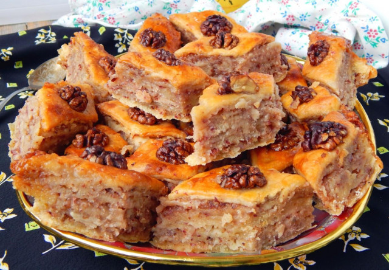

ООО "Русский дар" 
Вернутся в начальный раздел | Вернутся на главную страницу
| Ингредиенты для тесто: | Ингредиенты для начинки: | Ингредиенты для заливки: |
|---|---|---|
|
|
|
Оборудование: нож, миска, противень, духовка, холодильник, пищевая пленка, блендер и ложка столовая.

Подготовьте все необходимые ингредиенты. Все продукты нужно заранее вынуть из холодильника, чтобы они были комнатной температуры.

В миску положите размягченное сливочное масло. Добавьте сметану и вбейте куриное яйцо. Все тщательно перемешайте с помощью столовой ложки или блендера.

Всыпьте частями просеянную и соединенную с разрыхлителем муку. Быстро начните замешивать эластичное гладкое тесто. Муки может потребоваться чуть больше или меньше, зависит от плотности и качества продукции. О муке и её свойствах, а также о нюансах работы с разрыхлителем подробнее можно прочитать в отдельных статьях, ссылки в конце рецепта.

Соберите тесто в комок. Оберните его пищевой пленкой и уберите в холодильник на время, пока будете заниматься начинкой для пахлавы. Благодаря этой операции тесто получится слоистое, что и требуется для рецепта.

Орехи можно использовать для начинки любые, можно смесь грецкого ореха, арахиса и миндаля. Но грецких должно быть больше, сразу отложите примерно 20 половинок грецкого ореха в сторону, они потребуются для оформления пахлавы.

Орехи тщательно промываем и просушиваем в микроволновой печи или на сухой сковороде.

Переложите орехи в чашу блендера, добавьте сахар и корицу. Измельчите орехи, но чтобы они были крупнее крошки. Блендер можно заменить простой мясорубкой или скалкой.

Выньте из холодильника тесто и разделите его на 7 частей. Каждый пласт раскатайте в прямоугольный пласт толщиной около 0,3 сантиметра. Начинку для пахлавы нужно разделить на шесть одинаковых частей. Включите духовку на 200 градусов.

Первый пласт тесто переложите в смазанную растительным маслом форму. Сверху выложите ореховую начинку. Сделайте то же самое с остальным тестом. Верхний слой теста остается без начинки.

Нарежьте тесто с начинкой на параллельные полосы, но ножом не доходите до дна. Затем нарежьте также, не затрагивая последний слой теста, наискосок, чтобы получились ромбы.

Смажьте сверху тесто взбитым куриным яйцом. На каждый ромбик в серединку положите кусочек грецкого ореха. Отправьте медовую пахлаву примерно на 15 минут в духовку.

Растопите сливочное масло в микроволновке или на водяной бане. Выньте пахлаву из духовки и залейте ее растопленным сливочным маслом. Обновите при необходимости надрезы. Отправьте пахлаву в духовку еще примерно на полчаса. Точное время зависит от вашей духовки. Узнать об особенностях работы духовок можно, прочитав отдельную статью, ссылка в конце рецепта.

Приготовьте медовую заливку. Соедините в кастрюльке или сотейнике с толстым дном воду и сахар, доведите на среднем огне до кипения варите до небольшого загустения. Затем выключите нагрев, добавьте в смесь мед, перемешайте.

Выньте пахлаву из духовки и залейте медовой заливкой. Дайте немного ей пропитаться и остыть. Разрежьте ее уже до конца, выложите на блюдо и подавайте к столу. Армянская пахлава готова. Приятного чаепития!

Шаг 1, Шаг 2, Шаг 3, Шаг 4, Шаг 5, Шаг 6, Шаг 7, Шаг 8, Шаг 9, Шаг 10, Шаг 11, Шаг 12,Шаг 13, Шаг 14.